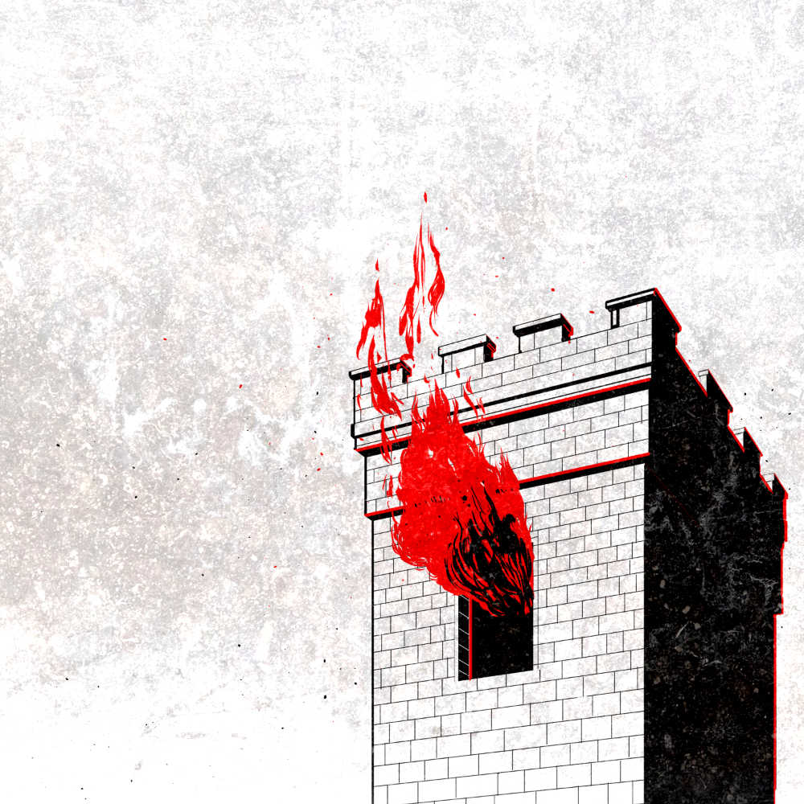

Investing in the stock market can be very profitable. Especially if you can see into the future. This is a story of how a group of traders and hackers got together to figure out a way to see into the future and make a lot of money from that.
EP 57
MS08-067
21 January 2020
https://dcs.megaphone.fm/ADV3206792063.mp3?key=6c16d685d494a040da8d66c3d58a1cfb&request_event_id=6b4414b7-ea41-43bb-a51c-f3e3cacf5cf2
58:32
Hear what goes on internally when Microsoft discovers a major
vulnerability within Windows.
